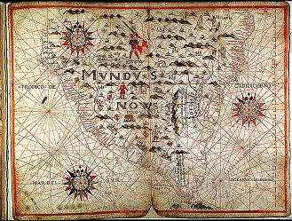

Copyright Michel Galiana 01.04.2006 (c) (r) All rights reserved |
Transl. Christian Souchon 01.04.2006 - 2026 (c) (r) All rights reserved |
Comments generated by AI in 2026
|
Guetteur est un poème consacré à l’acte de guetter — non pas vers l’extérieur, mais vers l’intérieur et vers le haut. Le locuteur est une sentinelle postée aux confins de la mémoire, scrutant les limites : les bords des cartes, les bornes de la raison, le scintillement des astres, les vestiges de voyages passés. Le poème repose sur une tension entre l’immensité cosmique et la vibration intime, entre le silence des profondeurs et le murmure fragile d’une histoire personnelle. 1. Le guetteur aux confins « Des confins — pèlerins, portulans, astres, mémoire » Le poème s’ouvre sur une énumération d’éléments liminaires : pèlerins (voyageurs en quête), portulans (cartes marines médiévales), astres (étoiles), mémoire. Tous sont des instruments d’orientation. Le guetteur se tient à la lisière du monde connu, là où les cartes s’effilochent, où les pèlerins perdent leur chemin, où les étoiles vacillent, où la mémoire devient incertaine. La géographie du poème est métaphysique : les frontières du moi coïncident avec celles du cosmos. 2. Le velours lie parchemins, déclins et tombeaux « Le velours unit parchemins, déclins et tombeaux » Le velours — matière douce et luxueuse — réunit les parchemins (le savoir), les déclins (le déclin ou la décrépitude) et les tombeaux (la mort). C’est une juxtaposition saisissante : une matière synonyme de raffinement lie entre eux des symboles de la mortalité. Galiana suggère que la mémoire est à la fois archivistique et funéraire : le guetteur manipule des documents qui sont aussi des reliques. 3. L’étoile vacillante et les lambeaux déchirés « L’étoile cligne où se raccordent tes lambeaux » L’étoile vacille là où les « lambeaux » du guetteur — fragments d’identité, bribes de mémoire — sont ravaudés ou réunis. Le soi n’est pas un récit continu, mais une constellation de fragments épars maintenus ensemble par une lumière lointaine. Pourtant : « Mais la voix est vent étrangère, étrange, — noire. » La voix qui émane de cette étoile est étrangère, étrange, noire. L’orientation cosmique ne garantit pas la clarté ; l’observateur entend un vent qui n’est pas le sien. 4. Harmonie sans horizons « (Accord et paix d’espaces sans horizons) » Ce vers entre parenthèses constitue un moment de suspension. L’harmonie et la paix résident dans des espaces sans horizons — infinis, sans frontières, sans limites. L’observateur entrevoit une sérénité qui n’est ni humaine, ni historique, ni narrative. C’est la paix de l’espace pur. 5. La vibration appelée « histoire » « Et tu recueilles des landes de ta raison / Une vibration que tu appelles ton histoire » L’observateur recueille, sur les landes de la raison, une vibration — un frémissement, une résonance — qu’il nomme son histoire. L’histoire n’est pas une succession d’événements, mais une vibration, un frémissement à peine perceptible dans le paysage de la pensée. C’est là l’une des intuitions les plus profondes de Galiana : le soi ne se construit pas à partir de faits, mais de résonances. 6. Le silence comme reflux « Aux profondeurs le silence est un reflux. » Dans les profondeurs, le silence s’apparente à un reflux — un mouvement de retrait. Le silence n’est pas une absence, mais une marée qui se retire vers l’intérieur, entraînant l’observateur vers son monde intérieur. 7. Le ciel éblouissant sous les paupières closes « Ciel étincelant sous les paupières denses. » Le ciel éblouit les paupières étroitement closes. La vision est intérieure ; l’observateur contemple le cosmos en fermant les yeux. Cette inversion — voir en ne voyant pas — est au cœur de la métaphysique du poème. 8. La pesanteur mène aux cantiques « Le poids plus que l’aile mène aux cantiques sus. » C’est la pesanteur, bien plus que l’aile, qui conduit aux cantiques. Ce vers renverse le symbolisme habituel : ce n’est pas le vol qui engendre le chant, mais la pesanteur. Le fardeau, la gravité et l’intériorité donnent naissance au cantique. Cette ligne fait écho à la notion de lourdeur : celle-ci n’est pas un obstacle, mais une voie vers la révélation. 9. L’autre frontière où s’achève l’absence « Que ton savoir soit de ne déserter plus / L’autre confin où s’achève ton absence. » Tel doit être le savoir du guetteur : ne plus jamais déserter l’autre frontière, ce lieu où l’absence prend fin. C’est là l’injonction finale du poème. Le guetteur doit demeurer sur le seuil où le moi revient, où l’absence cède la place à la présence, où la vibration devient histoire. Synthèse Guetteur est un poème de vigilance aux frontières du moi. Le guetteur scrute cartes, étoiles, tombeaux et souvenirs, recueillant dans les landes de la raison une vibration qui devient son histoire. Le silence est une marée qui reflue ; le ciel éblouit sous les paupières closes ; la pesanteur mène aux hymnes. Le poème s’achève sur une injonction : demeurer à la frontière où s’achève l’absence. La traduction anglaise saisit avec une fidélité remarquable l’orientation cosmique du poème et sa profondeur introspective. |
Guetteur (“Look out,” “Watcher”) is a poem about the act of watching — not outward, but inward and upward. The speaker is a sentinel posted at the borders of memory, surveying the confins: the edges of maps, the limits of reason, the flicker of stars, the remnants of past journeys. The poem is built on a tension between cosmic vastness and intimate vibration, between the silence of depths and the fragile whisper of personal history. 1. The watcher at the borders “Des confins — pèlerins, portulans, astres, mémoire” The poem opens with a list of liminal objects: pèlerins — pilgrims, wanderers, portulans — medieval nautical charts, astres — stars, mémoire — memory. These are all instruments of orientation. The watcher stands at the edge of the known world, where maps fray, where pilgrims lose their path, where stars flicker, where memory becomes uncertain. The poem’s geography is metaphysical: the borders of the self coincide with the borders of the cosmos. 2. Velvet binding parchments, declines, tombs “Le velours unit parchemins, déclins et tombeaux” Velvet — soft, luxurious — binds together parchments (knowledge), declines (decay), and tombs (death). This is a striking juxtaposition: the material of refinement holds together the symbols of mortality. Galiana suggests that memory is both archival and funerary: the watcher handles documents that are also relics. 3. The flickering star and the torn fragments “L’étoile cligne où se raccordent tes lambeaux” The star flickers where the watcher’s “shreds” — fragments of identity, scraps of memory — are patched together. The self is not a continuous narrative but a constellation of torn pieces held together by a distant light. Yet: “Mais la voix est vent étrangère, étrange, — noire.” The voice that comes from this star is alien, strange, dark. Cosmic orientation does not guarantee clarity; the watcher hears a wind that is not his own. 4. Harmony without horizons “(Accord et paix d’espaces sans horizons)” This parenthetical line is a moment of suspension. Harmony and peace exist in spaces without horizons — infinite, borderless, unbounded. The watcher glimpses a serenity that is not human, not historical, not narrative. It is the peace of pure space. 5. The vibration called “history” “Et tu recueilles des landes de ta raison / Une vibration que tu appelles ton histoire” The watcher gathers from the moorlands of reason a vibration — a tremor, a resonance — that he calls his history. History is not a sequence of events but a vibration, a barely perceptible tremor in the landscape of thought. This is one of Galiana’s most profound insights: the self is not built from facts but from resonances. 6. Silence as backward ebb “Aux profondeurs le silence est un reflux.” The silence in the depths is like a backward ebb — a movement of retreat. Silence is not absence but a tide that pulls inward, drawing the watcher toward the interior. 7. The dazzling sky beneath closed eyelids “Ciel étincelant sous les paupières denses.” Heaven dazzles the tightly closed lids. Vision is internal; the watcher sees the cosmos by closing his eyes. This inversion — seeing by not seeing — is central to the poem’s metaphysics. 8. Heaviness leads to hymns “Le poids plus que l’aile mène aux cantiques sus.” Weight, more than wings, leads to hymns. This reverses the usual symbolism: flight does not produce song; heaviness does. Burden, gravity, and inwardness generate the canticle. This line echoes Lourde: heaviness is not a hindrance but a path to revelation. 9. The other border where absence ends “Que ton savoir soit de ne déserter plus / L’autre confin où s’achève ton absence.” The watcher’s knowledge must be this: never again desert the other border, the place where absence ends. This is the poem’s final injunction. The watcher must remain at the threshold where the self returns, where absence gives way to presence, where the vibration becomes history. Synthesis Guetteur is a poem of vigilance at the borders of the self. The watcher surveys maps, stars, tombs, and memories, gathering from the moorlands of reason a vibration that becomes his history. Silence is a backward tide; the sky dazzles beneath closed eyelids; heaviness leads to hymns. The poem ends with an injunction: remain at the border where absence ends. The English translation captures the poem’s cosmic orientation and its introspective depth with remarkable fidelity. |
Listen to 'Look out' in English